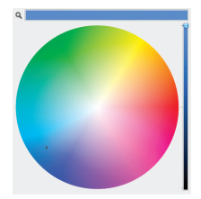
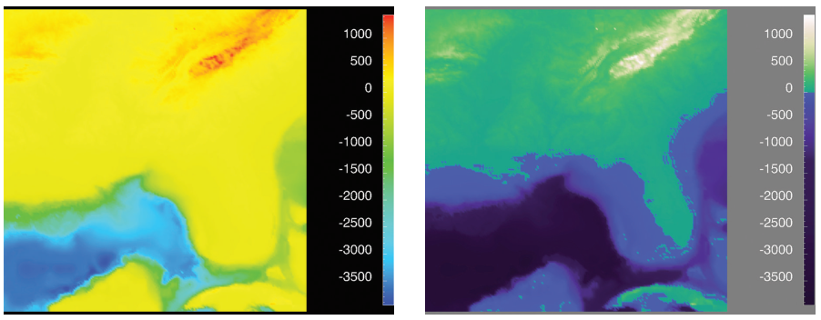

Vizualizacija podataka
Predavanje 07
Boje
- Boja je jedan od često korištenih ne-prostornih kanala
- Sami termin "boja" se promatra kroz tri odvojena kanala
- luminance
- hue
- saturation
- Svrha korištenja
- razlikovanje kategoričkih atributa
- enkodiranje uređenih atributa
Kako vidimo boje
- Mrežnica ljudskog oka ima dvije vrste receptora
-
štapići (rods)
- vidljivost u slabom osvjetljenju
- crno-bijela slika niske rezolucije
- orijentacija u prostoru
-
čunjići (cones)
- glavni senzori boje
- tri vrste - svaka posebno osjetljiva na različite valne duljine u spektru vidljivog svijetla
-
štapići (rods)
Kako vidimo boje
- Signali iz mrežnice se pretvaraju u kanale boja
- nekoliko teorija
- suprotni (opponent) kanali
- zeleno-crveni, žuto-plavi i crno-bijeli
- komplementarni
- red-cyan, green-magenta, blue-yellow
- suprotni (opponent) kanali
- nekoliko teorija
- Problem raspoznavanja boja ("daltonizam")
- problem sa čunjićima za određeni kanal boje
Prostor boja
- najčešće se koristi RGB sustav
- ne i za način na koji percipiramo boje
- prikladan za računala
- alternativni prostoj boja je HSL
- hue (nijansa, boja) - predstavlja ono što smatramo bojama (bez crne i bijele)
- saturation (zasićenost) kanal je količina bijele pomiješana sa odabranom bojom
- ligthness (svjetlina) os predstavlja količinu crne
- Prostor boja (color space) koje ljudsko oko može percipirati je trodimenzionalno tj. može se opisati kroz tri odvojene osi

Prostor boja
- HSL prostor i dalje u potpunosti ne odgovara našem perceptivnom sustavu
- kanal ligthness ne odgovara načinu na koji ljudsko oko percipira svjetlinu
- izračunata vrijednost L* bolje predstavlja ono što vidimo (linearni raspon vrijednosti)
- alternativni prostori boja - L*a*b*
- kanal ligthness ne odgovara načinu na koji ljudsko oko percipira svjetlinu
Prostor boja
- Zbog svega navedenog u vizualizacija koristimo tri različita kanala
- hue i saturation - boja i količina bijele
- luminance - kao kanal svjetline (ne ligthness)
- Boja (hue) se koristi kao kanal identiteta
- Saturation i luminance kao kanali veličine (magnitude)
- Luminance je prikladan za uređene podatke
- problem razlikovnosti - do 5 kategorija
- najbolji kanal za percepciju rubova između podataka
- Saturation kanal je također prikladan za uređene podatke
- teže uočiti na manjim regijama (kanal veličine)
- na manjim oznakama - 2 do 3 razine
Prostor boja
- Problem interferencije kanala
- hue i saturation nisu razdvojivi na malim područjima za potrebe kategorizacije
- Za manja područja je bolje koristiti jako zasićene boje kako bi se međusobno razlikovale
- Za veće površine prikladnije su manje zasićene boje
- Hue i saturation je teško razlikovati ako nisu na susjednim regijama
- Hue kanal ne sadrži implicitni raspored
Prozirnost
- Postoji i četvrti kanal koji je usko povezan sa ostala tri kanala boja - prozirnost
- Možemo enkodirati informaciju na način da oznaka varira od potpuno vidljive (opaque) do prozirne (transparent)
- Velika razina interferencije sa ostalim kanalima boje
- ne smije se koristiti sa luminance i saturation kanalima
- može se kombinirati sa hue kanalom ali opet za manji broj kategorija (2-3)
- Najčešće se koristi kada imamo više slojeva prikaza
- Može se koristiti kao redundantni kanal
Mape boja
- Mapa boja (colormap) definira mapiranje između boja i podatkovnih vrijednosti
- Odabir prikladne mape boja za vizualizaciju nije jednostavan zadatak
- Mape boja mogu biti kategoričke ili uređene
- kod uređenih još razlikujemo sekvencijalne i divergirajuće (sjetite se tipova podataka)
- Također, vrijednosti mogu biti kontinuirane ili segmentirane u određeni broj kategorije
- kontinuirane boje koristimo za kvantitativne atribute
- diskretne su prikladne za kategoričke atribute
-
Bivarijantne mape istovremeno prikazuju dva atributa
- razumljivo ako je jedan atribut binarni
Mape boja
Mape boja
- Razlika između kategoričkih prikaza kod oznaka sa većom površinom - bolje je koristiti manje zasićene boje
- preporučuje se korištenje boja sa pamtljivim imenima
- lakše pamćenje i diskutiranje
- preporučuje se korištenje boja sa pamtljivim imenima
Mape boja
- Na većim susjednim površinama je lakše razlikovati boje
- za razliku od sitnih ne-susjednih regija
Koliko boja iz lijevog grafa možete razlikovati na desnom?
Mape boja
- Kod kontinuiranih vrijednosti također je bitan odabir mape
- cijeli raspon boja naglašava detalje srednje razine
- kod dvije boje naglasak je na višoj razini detalja
- 3 problema kod prvog pristupa:
- boja izražava uređenost (iako ne služi tome)
- skala nije linearna (isti iznos razlike nije jednako prikazan)
- precizniji detalji se ne vide u kanali boja (hue)
Mape boja
- Potencijalno rješenje je korištenje mape boja sa monotonski povećavajućom svjetlinom (monotonically increasing luminance)
- različite boje (hue) su poredane po razini svjetline (luminance)
- boja se koristi za semantički smislenu kategorizaciju
- svjetlina (kanal magnitude) pruža dojam suptilnih razlika

Mape boja
- Moguće je i cijeli raspon boja (duga) koristiti kao linearnu mapu boja - uz cijenu gubitka dinamičkog raspona
- Na primjeru vidimo:
- standardni prikaz duge koji nije percepcijski linearan
- percepcijski linearan prikaz cijelog raspona boja
- segmentirani prikaz za manji broj kategorija

Mape boja
- Najsigurnija opcija je korištenje kanala boje za vizualno enkodiranje jednog atributa - univariate colormap
- Na slici (slide 11) sa različitim mapama boje imamo primjere nekoliko mapa boja sa dva različita atributa (bivariate colormap)
- Kod takvih prikaza je najbolje ako je jedan atribut binarni (ima samo dvije razine)
- boja (hue) jedan atribut, a dvije razine zasićenja za binarni
- Moguće su i druge kombinacije, osim dva kategorička atributa
- ovisno o kombinaciji, može biti teže uočiti razliku
- Kod izbora mape boja također treba voditi računa o prethodno spomenutim problemima sa prepoznavanjem boja
- postoji više simulatora za provjeru